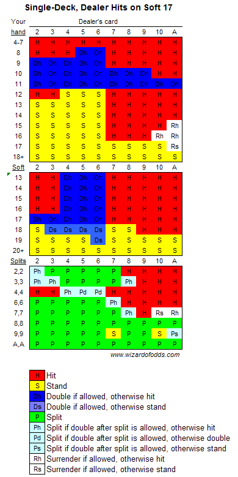

6 Blackjack
6.1 Introduction
Blackjack is one of the most appealing games to a mathematical gambler because we know that it can be beat with various card-counting techniques. My grandfather once told me he was in a casino playing blackjack and the dealer looked at him and said: “I don’t know if you’ve been counting cards, but I have. And if you ever wanted to increase your bet, now is the time.” He said he increased his bet as advised, won the next 5 hands in a row, and then the dealer shuffled. When he asked the dealer how he did that, he said he was counting 5’s and that “5’s are the most important card in the deck: they make a dealer’s hand from 12 to 16. The fewer of them there are, the better it is for the player.”.
Later on in life I would learn that counting 5’s is a strategy developed by Ed Thorp. Ed Thorp has an interesting history. He was a professor of mathematics and one of the first academics to investigate Blackjack probabilities using computer simulations in the early 1960’s. He tested his card counting methods in Las Vegas and was able to win a substantial amount of money. (Wikipedia humorously refers to this as his “applied research”). He also published his results, including various card counting strategies in the book Beat the Dealer. When he was at MIT he also worked with Claude Shannon (“the father of information theory”) at beating Roulette by wearing a camera that would take pictures of the ball in motion and predict where it would land, but getting into all the fun that Ed and Claude had would take us down a rabbit hole…
Suffice it to say that the more you learn about Blackjack, especially with it being one of the games with the lowest house edge (even without card counting), and the more movies they make about the “MIT Blackjack Team”, the more interesting this game becomes. As such, it was one of the first games I simulated and analyzed in detail.
6.2 Basic Strategy
The Wizard of Odds offers great tools to help players learn Basic Strategy, the mathematically optimal way of playing Blackjack against a newly shuffled deck of cards.
Basic Strategy, 4-8 Decks, Dealer Stands on Soft 17
 |
|
Basic Strategy, 1 Deck, Dealer Stands on Soft 17
 |
When playing according to these strategies, the Wizard of Odds calculates that you have the following expected returns:
| Decks | Stand on Soft 17 | Double After Split | Expected Return |
|---|---|---|---|
| 1 | Yes | Yes | 0.1839% |
| 1 | Yes | No | 0.0423% |
| 1 | No | Yes | -0.0072% |
| 1 | No | No | -0.1513% |
| 6 | Yes | Yes | -0.4026% |
| 6 | Yes | No | -0.5445% |
| 6 | No | Yes | -0.6151% |
| 6 | No | No | -0.7598% |
6.3 Simulation & Analysis
I have written at least 2 programs to simulate and analyze Blackjack odds. Sadly, I have lost the first program I wrote. (And it was a beauty. It had a GUI that let you select the number of decks and specify if you wanted to use a theoretical, infinite deck, compute exact odds, or use a simulation. It would even show you the final strategy in a nice, pretty view.) One day, I might write another that does all the fun and flash things the first one did, but right now it is pretty basic. It isn’t even able to calculate optimal strategy for games that allow doubling down or splitting. It is, however, able to reproduce the basic hit/stand strategy. Our results match the Wizard’s 100% for his 1-deck and 6-deck strategies against a dealer that stands on soft 17.
6.3.1 Expected Returns
Amazingly, the Wizard shows how to calculate optimal strategy in Excel here. His final spreadsheet (which also includes the ability to analyze expected returns) is available on Google Docs here. The spreadsheet results are based on an infinitely large deck so that the probability of drawing specific cards never changes. They do provide a good way for us to “ballpark” the estimated returns in Blackjack under a variety of rules.
In the table below we show the expected return for players that implement various parts of basic strategy. For example, a player who only knows the right places to hit and stand, will be at a 2.421% disadvantageous against the house. If you learn when to double down, that reduces to 1.087%. And if you learn when to split, it reduces to about 0.5% (depending on how many splits are allowed). This is the commonly-reported house edge for Blackjack, but it assumes you are playing basic strategy close to perfectly. Learning when to surrender takes a further 0.1% off the house edge.
| Actions | Exp. Return |
|---|---|
| Hit/Stand | -2.421% |
| Hit/Stand/Double | -1.087% |
| Hit/Stand/Double/Surrender | -0.994% |
| Hit/Stand/Double/Split (1 split only) | -0.570% |
| Hit/Stand/Double/Split (infinite splits) | -0.429% |
| Hit/Stand/Double/Split/Surrender (1 split only) | -0.485% |
| Hit/Stand/Double/Split/Surrender (infinite splits) | -0.344% |
When I ran my simulator on a 6-deck game where only Hit/Stand/Double was allowed, it produced an expected return of -0.9746%, in line with the results above, but slightly better to the player.
For finite decks, the Wizard produced the following expected returns (assuming the player plays optimal strategy for each game):
| Decks | Dealer 17 | Double After Split | Exp. Return |
|---|---|---|---|
| 1 | STAND | Y | 0.1839% |
| 1 | STAND | N | 0.0423% |
| 1 | HIT | Y | -0.0072% |
| 1 | HIT | N | -0.1513% |
| 6 | STAND | Y | -0.4026% |
| 6 | STAND | N | -0.5445% |
| 6 | HIT | Y | -0.6151% |
| 6 | HIT | N | -0.7598% |
In all of these games he is also assuming the following rules:
- Player may re-split to four hands, except aces
- No drawing to split aces
Notice that a single-deck game where the dealer stands on soft 17 actually provides odds that favor the player (which is why you won’t find it in a casino). The 6-deck game is more common and provides a house edge between 0.40% and 0.76%, depending on some variations in rules.
Lastly, there is one rule that the player should avoid at all costs: any table that pays 6-to-5 (1.2x) instead of 1.5x on Blackjack is hurting your odds immensely. The return on optimal strategy against infinite decks with infinite splits drops from -0.344% to -1.697%, increasing the house advantage almost 5x. Stick to tables that pay 1.5x on blackjack, and try to find ones where the dealer stands on soft 17. These will give you the best odds and let you enjoy more play time.
6.3.2 Probability of Blackjack
We can also calculate the probability of getting blackjack on the first hand with different sized decks. As shown below, the probability of getting blackjack is (slightly) higher with a smaller number of decks:
| Decks | Probability of BJ |
|---|---|
| 1 | 4.826546003016592% |
| 2 | 4.779686333084391% |
| 3 | 4.764267990074442% |
| 4 | 4.756596060943887% |
| 5 | 4.752004752004752% |
| 6 | 4.748948800395746% |
| 7 | 4.746768383132020% |
| 8 | 4.745134383688601% |
6.4 Card Counting
6.4.1 Hi/Lo Count
The most common card-counting technique is the Hi/Lo count. This assigns a point value of +1 to cards 2-6 and a value of -1 for all 10s, face cards, and aces. The player keeps a running counting (starting at zero with each new shoe). If there are 4 face cards dealt, the count will be -4. Note that this is a “balanced” count where there are 5 cards that have a -1 value and 5 that have a +1 value. This means the overall expected value of the count is zero. When the count goes positive it is in the player’s advantage, and when it goes negative it is in the house’s advantage. You will also want to normalize the count based on how many cards are left in the deck. You do this by dividing the count by the estimated number of decks left in the shoe. In this way the count essentially correlates with the percentage of 10s and aces left in the deck.
The premise of this strategy is that the more 10s and Aces are in the deck, the better it is for the player. After all, the player makes a lot of their money from blackjack (paying out 1.5x their bet) and from being able to double-down when a 10 is likely. The Wizard of Odds has a nice page on it here.
I don’t see any info on the overall advantage this stategy returns. The Wizard analyzes it in the context of additional rules that modify the strategy. These additional rules yield an expected return in the player’s advantage of 0.157% - 1.182%, depending on how many of the rules you learn, how deep into the deck the dealer goes, and how much you vary your bet when the count is good.
There used to be pages that documented various “side-counting” strategies, mainly those that would keep a side count of Aces. I don’t see these in his site anymore.
6.4.2 Ace/Five Count
The Wizard of Odds has a nice page describing a simple Ace/Five count similar to what my grandfather observed in the casino. He describes the strategy with the following steps:
- Establish what your minimum and maximum bets will be. Usually the maximum will be 8, 16, or 32 times the minimum bet, or any power of 2, but you can use whatever bet spread you wish.
- At the beginning of each shoe, start with your minimum bet, and a count of zero.
- For each five observed, add one to the count.
- For each ace observed, subtract one from the count.
- If the count is greater than or equal to two, then double your last bet, up to your maximum bet.
- If the count is less than or equal to one, then make the minimum bet.
- Use basic strategy for all playing decisions.
He claims this strategy produces the following advantages, depending on the size of your min/max bet spread:
| Spread | Player Advantage | Average Initial Bet |
|---|---|---|
| 1-8 | 0.30% | 2.7 |
| 1-16 | 0.45% | 4.2 |
| 1-32 | 0.57% | 7.1 |
He warns that this was built to work against a 6-8 deck game like you will commonly find in Vegas, but where the dealer stands on soft 17. If the dealer hits on soft 17, it costs the player 0.22%.
6.4.3 Continuous Shuffling Machines (CSMs)
About the time that I got excited about getting back into Blackjack analysis is when I learned about the introduction of Continuous Shuffling Machines. These machines take past cards from the dealer and continuosly shuffle them into a new deck. The idea is that it provides a brand new deck each time without ever allowing the game to penetrate deeply into the shoe. This of course completely destroys the advantage of card counting where the benefit derives from knowing past cards and increases the deeper into the shoe you go.
The Wizard of Odds also has a page on this (of course he does!). He says that the CSMs actually reduce the house edge anywhere from 0.014% (in an 8-deck game) to 0.113% (in a 1-deck game). But of course, they nullify any chance of turning the odds in your favor via card counting.